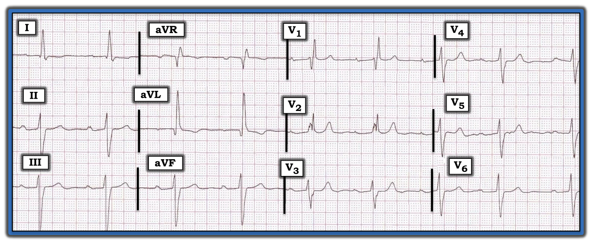
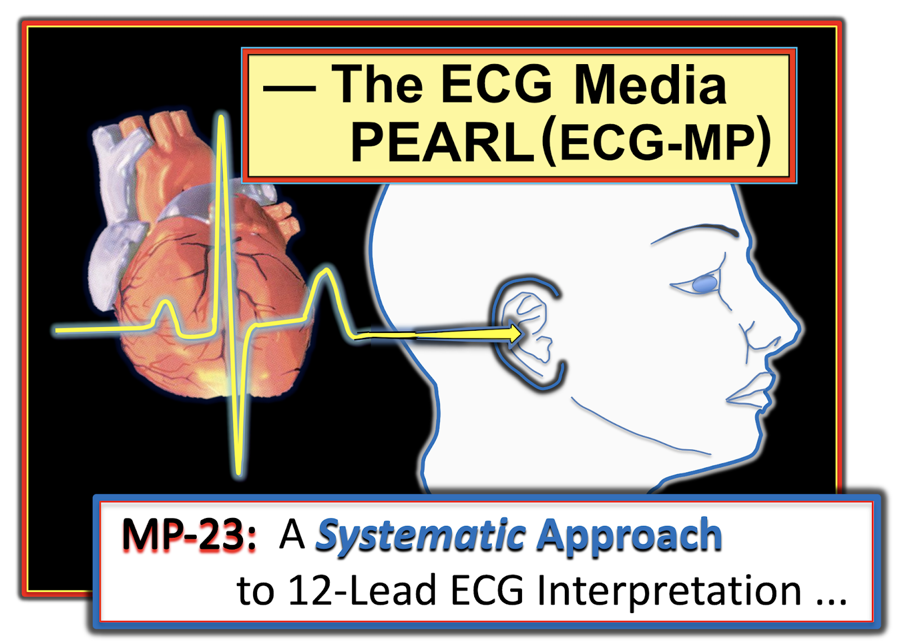
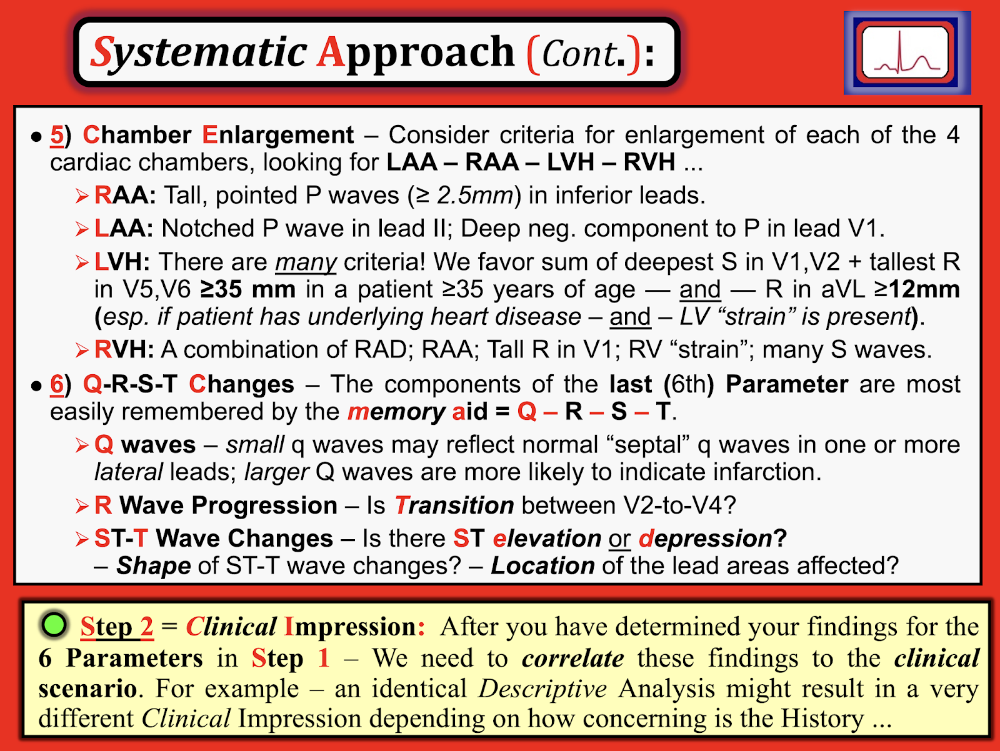

ECG Blog #205 — Blốc ba phân nhánh là gì?
Bạn sẽ đọc điện tâm đồ ở Hình-1 NHƯ THẾ NÀO? Tiếc là — không có bệnh sử nào để hỗ trợ bạn.
- CÂU HỎI: Có 7 dấu hiệu điện tâm đồ cần được ghi nhận. BẠN đã nhận ra được bao nhiêu dấu hiệu?


=======================================
LƯU Ý #1: Đến đây, một số độc giả có thể muốn nghe ECG Audio PEARL dài 7:40 phút trước khi đọc Suy nghĩ của tôi về điện tâm đồ ở Hình-1. Bạn có thể xem lại Suy nghĩ của tôi về bản ghi này vào bất kỳ lúc nào (phần này nằm bên dưới ECG MP-23).
=======================================


ECG Media PEARL #23 (7:40 phút Âm thanh) hôm nay — Một Cách tiếp cận hệ thống dễ dùng để đọc điện tâm đồ 12 chuyển đạo.
=======================================
LƯU Ý #2: Bản tóm tắt bằng văn bản về Cách tiếp cận Hệ thống của tôi để đọc điện tâm đồ 12 chuyển đạo nằm ở Phần bổ sung bên dưới (từ Hình-2 đến Hình-4).
=======================================
Cách tiếp cận CỦA TÔI với bản ghi này:
Cách TỐT NHẤT để tránh bỏ sót các dấu hiệu điện tâm đồ quan trọng — là sử dụng một Cách tiếp cận hệ thống. Điều này đặc biệt đúng khi đọc các bản ghi có phức bộ QRS rộng.
- ĐIỂM THEN CHỐT (PEARL) #1: Dù bạn dùng hệ thống nào — điều quan trọng là phải đánh giá các khoảng ở một thời điểm sớm trong quy trình. Lý do là NẾU phức bộ QRS rộng — thì tiêu chuẩn đánh giá QTc, Trục, Lớn các buồng tim và Thiếu máu cục bộ/Nhồi máu tất cả đều sẽ thay đổi! Vì vậy, ngay khi bạn nhận ra QRS giãn rộng — hãy DỪNG LẠI và Tìm ra TẠI SAO QRS rộng trước khi đi tiếp trong quá trình đánh giá.
6 Thông số CHÍNH trong Cách tiếp cận hệ thống của tôi:
- Tần số & Nhịp: Sóng P dương ở chuyển đạo II — nên nhịp ở Hình-1 là nhịp xoang. Dù chúng ta không có dải nhịp chuyển đạo dài — vẫn có thể thấy rõ khoảng R-R thay đổi đủ nhiều để được xem là loạn nhịp xoang, ở đây kèm nhịp chậm (tần số tim dao động trong khoảng ~50-60/phút).
- Các khoảng (PR/QRS/QTc): Khoảng PR kéo dài rõ (tức là tới ~0.32 giây) — vậy có blốc AV độ 1.
- Tiếp tục với các khoảng — phức bộ QRS ở Hình-1 rộng (tôi đo được trong khoảng 0.12-0.13 giây). Như đã nêu ở Điểm then chốt #1 (ở trên) — ngay khi bạn nhận ra QRS giãn rộng — hãy DỪNG LẠI và Tìm ra TẠI SAO QRS rộng trước khi đi tiếp trong quá trình đánh giá.
TẠI SAO phức bộ QRS rộng?
Như đã bàn chi tiết trong ECG Blog #204 — một khi bạn đã xác nhận nhịp là nhịp trên thất — nguyên nhân QRS giãn rộng có thể được xác định tiết kiệm thời gian nhất bằng cách tập trung vào 3 Chuyển đạo CHÍNH (tức là các chuyển đạo I, V1 và V6).
- Chuyển đạo V1 — cho thấy phức bộ rSR’ hoàn toàn điển hình của RBBB (blốc nhánh phải — Right Bundle Branch Block), ở chỗ sóng r ban đầu nhỏ và mảnh — sóng S theo sau đi xuống dưới đường nền — và sóng R’ tận cùng cao và mảnh (tức là “tai thỏ” bên phải cao hơn).
- Các chuyển đạo I và V6 — xác nhận chẩn đoán RBBB, vì mỗi chuyển đạo đều có sóng S tận cùng rộng.
Quay lại với cách tiếp cận hệ thống của chúng tôi:
Việc đánh giá các thông số còn lại trong Cách tiếp cận hệ thống của chúng tôi được thực hiện với ý thức rằng có RBBB hoàn toàn.
- QTc: Khoảng còn lại cần đánh giá là QTc. Bản thân blốc nhánh có thể làm QTc kéo dài. Dù vậy — khoảng QT dài nhất mà tôi đo được ở Hình-1 có vẻ ngắn hơn 450 msec, mà nếu xét đến nhịp chậm và rối loạn dẫn truyền thì không kéo dài. (Nhìn bằng mắt — khoảng QT rõ ràng ngắn hơn một nửa khoảng R-R, nên gần như chắc chắn không kéo dài ở Hình-1).
TRỤC — “Ý nghĩa” của trục bị thay đổi trong RBBB. Đó là do hướng zíc-zắc của hoạt động điện do rối loạn dẫn truyền này. Tức là — vectơ từ trái sang phải ban đầu của khử cực vách được bảo tồn (vì rối loạn dẫn truyền trong RBBB nằm ở phía phải của vách) — tiếp theo là khử cực thất trái (LV) (không bị blốc; trong thời gian đó sóng khử cực đi ngược trở lại sang trái) — và cuối cùng, quay trở lại sang phải, vì thất phải (RV) “bị blốc” là phần cuối cùng của tim được khử cực.
- Về mặt lâm sàng — điều duy nhất chúng ta quan tâm về trục khi có RBBB là liệu có: i) RBBB + LAHB; ii) RBBB + LPHB; hoặc, iii) RBBB không kèm blốc phân nhánh nào. Ở Hình-1, ngoài RBBB — phức bộ QRS chủ yếu âm ở chuyển đạo II. Do đó — có blốc hai phân nhánh (tức là RBBB + LAHB).
====================================
LƯU Ý: Để ôn lại bằng hình ảnh về Blốc hai phân nhánh kèm RBBB — Hãy bắt đầu từ phút 9:20 trong Media Pearl #21 của tôi ở ECG Blog #203).
- Tôi đã trích một bản tóm tắt bằng văn bản từ ECG-2014-ePUb của tôi về chẩn đoán điện tâm đồ các blốc hai phân nhánh. Phần này nằm bên dưới, ở Phần bổ sung (từ Hình-5 đến Hình-7).
- Để tải bản PDF của Hình-5, 6, 7 — BẤM VÀO ĐÂY.
====================================
Lớn các buồng tim: Không có RAA, LAA hay RVH. Có LVH.
- Tiêu chuẩn bất thường nhĩ không bị ảnh hưởng bởi blốc nhánh. Tuy nhiên, vì RBBB và LBBB làm thay đổi trình tự của cả khử cực thất lẫn tái cực thất — nên tiêu chuẩn điện thế và các thay đổi sóng ST-T của “tăng gánh” thất trái hay thất phải sẽ khó nhận ra hơn.
- Dù vậy — vì thất trái khử cực không bị đối kháng khi có RBBB (do khử cực thất phải bị chậm lại bởi rối loạn dẫn truyền này) — ảnh hưởng của RBBB lên chẩn đoán LVH trên điện tâm đồ có thể không đáng kể. RBBB có thể ảnh hưởng đến mức nào lên chẩn đoán LVH trên điện tâm đồ thì khó dự đoán. Vì vậy, dù biết rằng còn thiếu dữ liệu và câu trả lời xác định — điện thế tăng mạnh mà chúng ta thấy ở Hình-1 của sóng R ở chuyển đạo aVL (tức là ~15 mm), kèm theo hình dạng sóng ST-T ở chuyển đạo này trông điển hình cho “tăng gánh” thất trái (LV strain) gợi ý ít nhất là LVH có khả năng.
- Hình-4 ở Phần bổ sung bên dưới trình bày các tiêu chuẩn điện thế mà tôi ưa dùng để chẩn đoán LVH trên điện tâm đồ. Điều cần lưu ý — là các tiêu chuẩn điện thế ở Hình-4 dựa trên thời gian QRS bình thường.
- T.B. (P.S.) — Đôi khi LAHB cũng được biết là làm thay đổi biên độ QRS trên điện tâm đồ theo cách có thể khiến việc nhận ra LVH trở nên khó khăn. Điều cốt lõi: NẾU thật sự cần biết có LVH hay không — thì sẽ cần làm siêu âm tim.
Thay đổi Q-R-S-T:
- Sóng Q xuất hiện ở cả hai chuyển đạo bên cao ở Hình-1 (tức là ở các chuyển đạo I và aVL). Dù sóng Q ở chuyển đạo I nhỏ — sóng Q ở chuyển đạo aVL vừa sâu hơn vừa rộng hơn so với một sóng q vách bình thường. Sóng Q bất thường này cần được ghi nhận trong kết luận đọc bằng văn bản — và, cần ghi chú rằng sóng Q ở chuyển đạo aVL này có thể phản ánh nhồi máu thành bên cũ.
- Tăng tiến sóng R — ít quan trọng hơn trong bản ghi này, vì sự hiện diện của RBBB theo định nghĩa sẽ tạo ra sóng R ưu thế ở chuyển đạo V1.
ĐIỂM THEN CHỐT (PEARL) #2: Có thay đổi sóng ST-T nguyên phát ở ít nhất các chuyển đạo V1 và V2. Như đã bàn chi tiết trong ECG Blog #204 — đáp ứng bình thường của sóng ST-T ở 3 chuyển đạo CHÍNH khi có BBB là hướng ngược chiều với dao động QRS cuối cùng.
- Nếu có gì thì — đoạn ST ở chuyển đạo V1 có thể hơi chênh lên. Bình thường nó phải chênh xuống (tức là ngược chiều với dao động QRS cuối cùng, vốn là sóng R’ dương ở chuyển đạo này). Sóng T ở chuyển đạo V1 rõ ràng bất thường — vì đáp ứng ST-T bình thường khi có RBBB ở chuyển đạo V1 phải là ít nhất một mức ST chênh xuống nào đó.
- Khó dự đoán ST chênh xuống dự kiến khi có RBBB sẽ kéo dài qua “bao nhiêu chuyển đạo” — nhưng sóng T cao và nhọn bất ngờ ở chuyển đạo V2 rõ ràng không phải là đáp ứng bình thường.
- Chúng ta đã ghi nhận hình dạng sóng ST-T chênh xuống ở chuyển đạo aVL — trông rất giống “tăng gánh” thất trái. Các chuyển đạo khác ở Hình-1 cho thấy đoạn ST dẹt không đặc hiệu và biên độ sóng T giảm. Do đó — 2 chuyển đạo đáng lo ngại nhất trên bản ghi này về hình dạng sóng ST-T là các chuyển đạo V1 và V2.
==============================
TRẢ LỜI câu hỏi chúng tôi đặt ra ở đầu case này:
7 dấu hiệu điện tâm đồ cần được ghi nhận trên bản ghi hôm nay là:
- Nhịp chậm xoang và loạn nhịp xoang.
- RBBB.
- LAHB.
- Blốc AV độ 1.
- LVH (kèm thay đổi sóng ST-T phù hợp với “tăng gánh” thất trái).
- Sóng Q bất thường ở chuyển đạo aVL (kèm sóng Q nhỏ hơn ở chuyển đạo I).
- Thay đổi sóng ST-T nguyên phát, ít nhất ở các chuyển đạo V1 và V2.
==============================
Tổng hợp lại: Việc phải đọc điện tâm đồ khi không có bất kỳ bệnh sử lâm sàng nào luôn là một thách thức. Dù vậy — tôi thường xuyên gặp tình huống này khi là giảng viên chịu trách nhiệm đọc kết quả điện tâm đồ chính thức cho nhiều người hành nghề tại phòng khám của chúng tôi, về rất nhiều bệnh nhân mà tôi không hề biết gì.
- Rõ ràng là bệnh nhân trong case hôm nay có bệnh tim nền đáng kể, xét đến LVH có khả năng (kèm “tăng gánh” thất trái) — có thể có nhồi máu cũ (sóng Q bất thường ở chuyển đạo aVL) — và nhịp chậm + 3 chỉ điểm khác của bệnh lý hệ thống dẫn truyền (tức là blốc AV độ 1 — RBBB — LAHB).
- Dù vậy — bất chấp các bất thường sóng T nguyên phát ở các chuyển đạo V1 và V2 — “linh cảm” của tôi là những thay đổi chúng ta thấy có lẽ không phải cấp tính (vì ngoài các thay đổi ở các chuyển đạo V1 và V2 — thay đổi sóng ST-T ở 10 chuyển đạo còn lại trông không có vẻ mới).
- ĐIỀU CỐT LÕI: Cần đối chiếu lâm sàng ở bệnh nhân này để quyết định xử trí phù hợp. Tìm được một bản ghi cũ của bệnh nhân này sẽ vô cùng quý giá để xác định dấu hiệu điện tâm đồ nào ở trên nhiều khả năng là mới so với cũ. Và, NẾU có tiền sử ngất hoặc tiền ngất — điều này sẽ đặc biệt đáng lo ngại khi có nhịp chậm + 3 rối loạn của hệ thống dẫn truyền. Tiền sử đau ngực gần đây cũng sẽ rất đáng lo ngại — vì các dấu hiệu điện tâm đồ trên bản ghi hôm nay có thể phù hợp với nhồi máu mới xảy ra. Đối chiếu lâm sàng là thiết yếu.
==============================
Có Blốc Ba Phân nhánh không?
Thuật ngữ blốc “ba phân nhánh” — ngụ ý dẫn truyền bị suy giảm ở cả 3 bó dẫn truyền chính: i) nhánh phải; ii) phân nhánh trái trước; và, iii) phân nhánh trái sau.
- Thuật ngữ “blốc ba phân nhánh” không còn được khuyến cáo sử dụng (Surawicz và cs., JACC: Vol. 53, No. 11, pp 976-981, 2009). Lý do là “sự khác biệt lớn về giải phẫu và bệnh học tạo ra hình ảnh này” — cũng như thực tế là thường sẽ không thể chẩn đoán xác định blốc ba phân nhánh từ điện tâm đồ bề mặt. Chúng ta đơn giản là không thể biết được NẾU khoảng PR kéo dài ở một bệnh nhân có blốc hai phân nhánh (như ở Hình-1) là do bệnh lý nút AV hay do bệnh lý ở phân nhánh dẫn truyền còn lại.
- Hiếm khi, có thể chẩn đoán được tổn thương ở cả 3 bó dẫn truyền — ví dụ, nếu có RBBB và LAHB luân phiên với LPHB. Nhưng ngay cả trong tình huống này — các khuyến cáo hiện nay ưu tiên mô tả rõ ràng bằng cách tránh dùng thuật ngữ “blốc ba phân nhánh”, và thay vào đó ghi nhận từng rối loạn dẫn truyền hiện có (tức là ở Hình-1 — đó là blốc AV độ 1 + RBBB + LAHB).
==============================
Các bài ECG Blog liên quan đến case hôm nay:
- ECG Blog #203 — Ôn tập chẩn đoán điện tâm đồ về Trục và Blốc phân nhánh.
- ECG Blog #204 — Ôn tập Cách tiếp cận dễ dùng của tôi để chẩn đoán BBB trên điện tâm đồ.
- ECG Blog #73 — “Quan điểm của tôi” về chẩn đoán LVH trên điện tâm đồ.
- ECG Blog #185 — Sử dụng Cách tiếp cận hệ thống để đọc nhịp.
=======================================

PHẦN BỔ SUNG (ngày 18 tháng 3 năm 2021): Trong 3 Hình sau đây — tôi trình bày Cách tiếp cận hệ thống mà tôi ưa dùng (ở Hình-2 và -3) — và các tiêu chuẩn tôi ưa dùng để chẩn đoán LVH trên điện tâm đồ (Hình-4).


